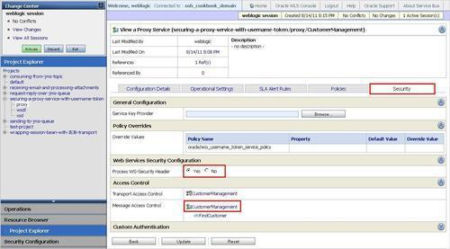
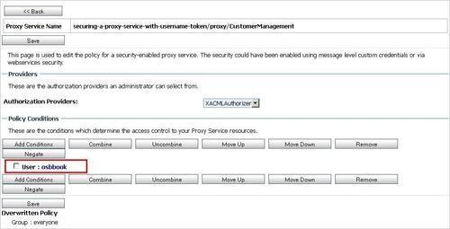
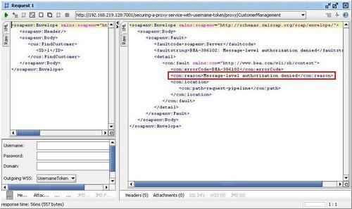
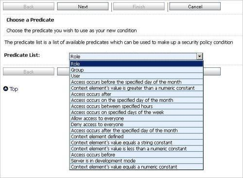
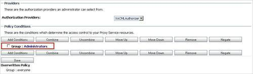
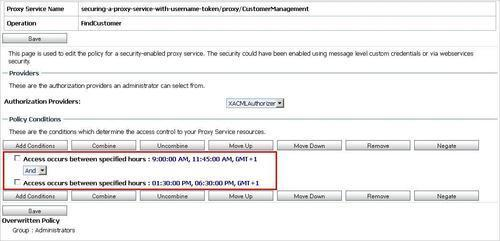

In the Securing a proxy service by Username Token authentication recipe we have made sure that only authenticated users have access to services through the use of OWSM. With this recipe, we will extend this security configuration with authorization to make sure that only selected users, roles, or groups have access to the proxy service.
For this we will need the OSB project from the previous Securing a proxy service by Username Token authentication recipe.
The finished solution can be imported into Eclipse OEPE from \chapter-11\solution\securing-a-proxy-service-with-username-token.
In the Service Bus console, perform the following steps to configure Message Access Control:

osbbook into the User Argument Name field to allow access only for the osbbook user and click Add.
Use soapUI to test the service as shown in the Securing a proxy service by Username Token authentication recipe. Make sure that the osbbook user is used for authentication.
Due to the OWSM policy, the incoming message will contain a WS-Security UsernameToken. The username will be extracted and first used for authenticating against the list of known users and then used to authorize against the Message Access Control list before access to the proxy service is granted.
If we test the OSB service with a different user such as weblogic, the authentication would still be successful. But because the weblogic user is not configured in the Message Access Control list, a Message-level authorization denied error is shown.

Besides authorizing based on the user, other predicates are available to make up security policy conditions, such as predicates for groups, roles, time/date, and context elements. The next screenshot shows the possible values of the Predicate List drop-down listbox.

Instead of adding individual users to allow access, you can use Role or Group to work with roles and groups to simplify maintenance.

We can also make sure that a resource, that is, a proxy service is only available during certain hours of a day. For that we have to select the Access occurs between specified hours from the Predicate List drop-down listbox.
We can use the same predicate twice to make sure the proxy service can only be accessed in the morning from 9:00 to 11:45 and then in the afternoon from 1:30 to 6:30.
